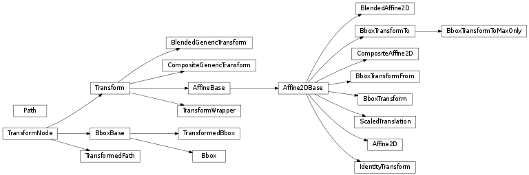

matplotlib includes a framework for arbitrary geometric transformations that is used determine the final position of all elements drawn on the canvas.
Transforms are composed into trees of TransformNode objects whose actual value depends on their children. When the contents of children change, their parents are automatically invalidated. The next time an invalidated transform is accessed, it is recomputed to reflect those changes. This invalidation/caching approach prevents unnecessary recomputations of transforms, and contributes to better interactive performance.
For example, here is a graph of the transform tree used to plot data to the graph:

The framework can be used for both affine and non-affine transformations. However, for speed, we want use the backend renderers to perform affine transformations whenever possible. Therefore, it is possible to perform just the affine or non-affine part of a transformation on a set of data. The affine is always assumed to occur after the non-affine. For any transform:
full transform == non-affine part + affine part
The backends are not expected to handle non-affine transformations themselves.
Bases: object
TransformNode is the base class for anything that participates in the transform tree and needs to invalidate its parents or be invalidated. This includes classes that are not really transforms, such as bounding boxes, since some transforms depend on bounding boxes to compute their values.
Creates a new TransformNode.
Returns a frozen copy of this transform node. The frozen copy will not update when its children change. Useful for storing a previously known state of a transform where copy.deepcopy() might normally be used.
Invalidate this TransformNode and triggers an invalidation of its ancestors. Should be called any time the transform changes.
If pass_through is True, all ancestors will always be invalidated, even if ‘self’ is already invalid.
Set the children of the transform, to let the invalidation system know which transforms can invalidate this transform. Should be called from the constructor of any transforms that depend on other transforms.
Bases: matplotlib.transforms.TransformNode
This is the base class of all bounding boxes, and provides read-only access to its data. A mutable bounding box is provided by the Bbox class.
The canonical representation is as two points, with no restrictions on their ordering. Convenience properties are provided to get the left, bottom, right and top edges and width and height, but these are not stored explicitly.
Creates a new TransformNode.
Return a copy of the Bbox, shifted to position c within a container.
c: may be either:
- a sequence (cx, cy) where cx and cy range from 0 to 1, where 0 is left or bottom and 1 is right or top
- a string: - ‘C’ for centered - ‘S’ for bottom-center - ‘SE’ for bottom-left - ‘E’ for left - etc.
Optional argument container is the box within which the Bbox is positioned; it defaults to the initial Bbox.
Returns True if (x, y) is a coordinate inside the bounding box or on its edge.
Return an array of points which are the four corners of this rectangle. For example, if this Bbox is defined by the points (a, b) and (c, d), corners() returns (a, b), (a, d), (c, b) and (c, d).
Count the number of vertices contained in the Bbox.
vertices is a Nx2 Numpy array.
Count the number of bounding boxes that overlap this one.
bboxes is a sequence of BboxBase objects
Return a new Bbox which is this Bbox expanded around its center by the given factors sw and sh.
TransformNode is the base class for anything that participates in the transform tree and needs to invalidate its parents or be invalidated. This includes classes that are not really transforms, such as bounding boxes, since some transforms depend on bounding boxes to compute their values.
Returns True if (x, y) is a coordinate inside the bounding box, but not on its edge.
Returns True if this bounding box overlaps with the given bounding box other, but not on its edge alone.
Return the intersection of the two bboxes or None if they do not intersect.
Implements the algorithm described at:
(property) intervalx is the pair of x coordinates that define the bounding box. It is not guaranteed to be sorted from left to right.
(property) intervaly is the pair of y coordinates that define the bounding box. It is not guaranteed to be sorted from bottom to top.
Return a new Bbox object, statically transformed by the inverse of the given transform.
Returns True if this bounding box overlaps with the given bounding box other.
(property) p0 is the first pair of (x, y) coordinates that define the bounding box. It is not guaranteed to be the bottom-left corner. For that, use min.
(property) p1 is the second pair of (x, y) coordinates that define the bounding box. It is not guaranteed to be the top-right corner. For that, use max.
Return a new bounding box that bounds a rotated version of this bounding box by the given radians. The new bounding box is still aligned with the axes, of course.
Return a copy of the Bbox, shrunk by the factor mx in the x direction and the factor my in the y direction. The lower left corner of the box remains unchanged. Normally mx and my will be less than 1, but this is not enforced.
Return a copy of the Bbox, shrunk so that it is as large as it can be while having the desired aspect ratio, box_aspect. If the box coordinates are relative—that is, fractions of a larger box such as a figure—then the physical aspect ratio of that figure is specified with fig_aspect, so that box_aspect can also be given as a ratio of the absolute dimensions, not the relative dimensions.
(property) The width and height of the bounding box. May be negative, in the same way as width and height.
e.g., bbox.splitx(f1, f2, ...)
Returns a list of new Bbox objects formed by splitting the original one with vertical lines at fractional positions f1, f2, ...
e.g., bbox.splitx(f1, f2, ...)
Returns a list of new Bbox objects formed by splitting the original one with horizontal lines at fractional positions f1, f2, ...
(property) x0 is the first of the pair of x coordinates that define the bounding box. x0 is not guaranteed to be less than x1. If you require that, use xmin.
(property) x1 is the second of the pair of x coordinates that define the bounding box. x1 is not guaranteed to be greater than x0. If you require that, use xmax.
(property) y0 is the first of the pair of y coordinates that define the bounding box. y0 is not guaranteed to be less than y1. If you require that, use ymin.
Bases: matplotlib.transforms.BboxBase
A mutable bounding box.
points: a 2x2 numpy array of the form [[x0, y0], [x1, y1]]
If you need to create a Bbox object from another form of data, consider the static methods unit(), from_bounds() and from_extents().
(staticmethod) Create a new Bbox from x0, y0, width and height.
width and height may be negative.
(staticmethod) Create a new Bbox from left, bottom, right and top.
The y-axis increases upwards.
Get the points of the bounding box directly as a numpy array of the form: [[x0, y0], [x1, y1]].
Set whether the existing bounds of the box should be ignored by subsequent calls to update_from_data() or update_from_data_xy().
value:
- When True, subsequent calls to update_from_data() will ignore the existing bounds of the Bbox.
- When False, subsequent calls to update_from_data() will include the existing bounds of the Bbox.
return whether the bbox has changed since init
return whether the x-limits have changed since init
return whether the y-limits have changed since init
Set the points of the bounding box directly from a numpy array of the form: [[x0, y0], [x1, y1]]. No error checking is performed, as this method is mainly for internal use.
Update the bounds of the Bbox based on the passed in data. After updating, the bounds will have positive width and height; x0 and y0 will be the minimal values.
x: a numpy array of x-values
y: a numpy array of y-values
Update the bounds of the Bbox based on the passed in data. After updating, the bounds will have positive width and height; x0 and y0 will be the minimal values.
xy: a numpy array of 2D points
updatex: when True, update the x values
updatey: when True, update the y values
Update the bounds of the Bbox based on the passed in data. After updating, the bounds will have positive width and height; x0 and y0 will be the minimal values.
path: a Path instance
updatex: when True, update the x values
updatey: when True, update the y values
Bases: matplotlib.transforms.BboxBase
A Bbox that is automatically transformed by a given transform. When either the child bounding box or transform changes, the bounds of this bbox will update accordingly.
bbox: a child Bbox
transform: a 2D Transform
Get the points of the bounding box directly as a numpy array of the form: [[x0, y0], [x1, y1]].
Bases: matplotlib.transforms.TransformNode
The base class of all TransformNode instances that actually perform a transformation.
All non-affine transformations should be subclasses of this class. New affine transformations should be subclasses of Affine2D.
Subclasses of this class should override the following members (at minimum):
- input_dims
- output_dims
- transform()
- is_separable
- has_inverse
- inverted() (if has_inverse is True)
If the transform needs to do something non-standard with matplotlib.path.Path objects, such as adding curves where there were once line segments, it should override:
Creates a new TransformNode.
Return whether the given transform is a sub-tree of this transform.
This routine uses transform equality to identify sub-trees, therefore in many situations it is object id which will be used.
For the case where the given transform represents the whole of this transform, returns True.
Returns whether the given branch is a sub-tree of this transform on each seperate dimension.
A common use for this method is to identify if a transform is a blended transform containing an axes’ data transform. e.g.:
x_isdata, y_isdata = trans.contains_branch_seperately(ax.transData)
Returns the number of transforms which have been chained together to form this Transform instance.
Note
For the special case of a Composite transform, the maximum depth of the two is returned.
Get the affine part of this transform.
Get the Affine transformation array for the affine part of this transform.
True if this transform has a corresponding inverse transform.
The number of input dimensions of this transform. Must be overridden (with integers) in the subclass.
Return the corresponding inverse transformation.
The return value of this method should be treated as temporary. An update to self does not cause a corresponding update to its inverted copy.
x === self.inverted().transform(self.transform(x))
True if this transform is separable in the x- and y- dimensions.
The number of output dimensions of this transform. Must be overridden (with integers) in the subclass.
Performs the transformation on the given array of values.
Accepts a numpy array of shape (N x input_dims) and returns a numpy array of shape (N x output_dims).
Performs only the affine part of this transformation on the given array of values.
transform(values) is always equivalent to transform_affine(transform_non_affine(values)).
In non-affine transformations, this is generally a no-op. In affine transformations, this is equivalent to transform(values).
Accepts a numpy array of shape (N x input_dims) and returns a numpy array of shape (N x output_dims).
Performs transformation on a set of angles anchored at specific locations.
The angles must be a column vector (i.e., numpy array).
The pts must be a two-column numpy array of x,y positions (angle transforms currently only work in 2D). This array must have the same number of rows as angles.
The transformed angles are returned in an array with the same size as angles.
The generic version of this method uses a very generic algorithm that transforms pts, as well as locations very close to pts, to find the angle in the transformed system.
Performs only the non-affine part of the transformation.
transform(values) is always equivalent to transform_affine(transform_non_affine(values)).
In non-affine transformations, this is generally equivalent to transform(values). In affine transformations, this is always a no-op.
Accepts a numpy array of shape (N x input_dims) and returns a numpy array of shape (N x output_dims).
Returns a transformed path.
path: a Path instance.
In some cases, this transform may insert curves into the path that began as line segments.
Returns a path, transformed only by the affine part of this transform.
path: a Path instance.
transform_path(path) is equivalent to transform_path_affine(transform_path_non_affine(values)).
Returns a path, transformed only by the non-affine part of this transform.
path: a Path instance.
transform_path(path) is equivalent to transform_path_affine(transform_path_non_affine(values)).
A convenience function that returns the transformed copy of a single point.
The point is given as a sequence of length input_dims. The transformed point is returned as a sequence of length output_dims.
Bases: matplotlib.transforms.Transform
A helper class that holds a single child transform and acts equivalently to it.
This is useful if a node of the transform tree must be replaced at run time with a transform of a different type. This class allows that replacement to correctly trigger invalidation.
Note that TransformWrapper instances must have the same input and output dimensions during their entire lifetime, so the child transform may only be replaced with another child transform of the same dimensions.
child: A class:Transform instance. This child may later be replaced with set().
Returns a frozen copy of this transform node. The frozen copy will not update when its children change. Useful for storing a previously known state of a transform where copy.deepcopy() might normally be used.
Replace the current child of this transform with another one.
The new child must have the same number of input and output dimensions as the current child.
Bases: matplotlib.transforms.Transform
The base class of all affine transformations of any number of dimensions.
Get the affine part of this transform.
Performs the transformation on the given array of values.
Accepts a numpy array of shape (N x input_dims) and returns a numpy array of shape (N x output_dims).
Performs only the affine part of this transformation on the given array of values.
transform(values) is always equivalent to transform_affine(transform_non_affine(values)).
In non-affine transformations, this is generally a no-op. In affine transformations, this is equivalent to transform(values).
Accepts a numpy array of shape (N x input_dims) and returns a numpy array of shape (N x output_dims).
Performs only the non-affine part of the transformation.
transform(values) is always equivalent to transform_affine(transform_non_affine(values)).
In non-affine transformations, this is generally equivalent to transform(values). In affine transformations, this is always a no-op.
Accepts a numpy array of shape (N x input_dims) and returns a numpy array of shape (N x output_dims).
Returns a transformed path.
path: a Path instance.
In some cases, this transform may insert curves into the path that began as line segments.
Bases: matplotlib.transforms.AffineBase
The base class of all 2D affine transformations.
2D affine transformations are performed using a 3x3 numpy array:
a c e
b d f
0 0 1
This class provides the read-only interface. For a mutable 2D affine transformation, use Affine2D.
Subclasses of this class will generally only need to override a constructor and get_matrix() that generates a custom 3x3 matrix.
Returns a frozen copy of this transform node. The frozen copy will not update when its children change. Useful for storing a previously known state of a transform where copy.deepcopy() might normally be used.
Return the corresponding inverse transformation.
The return value of this method should be treated as temporary. An update to self does not cause a corresponding update to its inverted copy.
x === self.inverted().transform(self.transform(x))
(staticmethod) Create a new transformation matrix as a 3x3 numpy array of the form:
a c e
b d f
0 0 1
Return the values of the matrix as a sequence (a,b,c,d,e,f)
Performs only the affine part of this transformation on the given array of values.
transform(values) is always equivalent to transform_affine(transform_non_affine(values)).
In non-affine transformations, this is generally a no-op. In affine transformations, this is equivalent to transform(values).
Accepts a numpy array of shape (N x input_dims) and returns a numpy array of shape (N x output_dims).
A convenience function that returns the transformed copy of a single point.
The point is given as a sequence of length input_dims. The transformed point is returned as a sequence of length output_dims.
Bases: matplotlib.transforms.Affine2DBase
A mutable 2D affine transformation.
Initialize an Affine transform from a 3x3 numpy float array:
a c e
b d f
0 0 1
If matrix is None, initialize with the identity transform.
Reset the underlying matrix to the identity transform.
(staticmethod) Create a new Affine2D instance from the given values:
a c e
b d f
0 0 1
.
Get the underlying transformation matrix as a 3x3 numpy array:
a c e
b d f
0 0 1
.
(staticmethod) Return a new Affine2D object that is the identity transform.
Unless this transform will be mutated later on, consider using the faster IdentityTransform class instead.
Add a rotation (in radians) to this transform in place.
Returns self, so this method can easily be chained with more calls to rotate(), rotate_deg(), translate() and scale().
Add a rotation (in radians) around the point (x, y) in place.
Returns self, so this method can easily be chained with more calls to rotate(), rotate_deg(), translate() and scale().
Add a rotation (in degrees) to this transform in place.
Returns self, so this method can easily be chained with more calls to rotate(), rotate_deg(), translate() and scale().
Add a rotation (in degrees) around the point (x, y) in place.
Returns self, so this method can easily be chained with more calls to rotate(), rotate_deg(), translate() and scale().
Adds a scale in place.
If sy is None, the same scale is applied in both the x- and y-directions.
Returns self, so this method can easily be chained with more calls to rotate(), rotate_deg(), translate() and scale().
Set this transformation from the frozen copy of another Affine2DBase object.
Set the underlying transformation matrix from a 3x3 numpy array:
a c e
b d f
0 0 1
.
Adds a translation in place.
Returns self, so this method can easily be chained with more calls to rotate(), rotate_deg(), translate() and scale().
Bases: matplotlib.transforms.Affine2DBase
A special class that does on thing, the identity transform, in a fast way.
Returns a frozen copy of this transform node. The frozen copy will not update when its children change. Useful for storing a previously known state of a transform where copy.deepcopy() might normally be used.
Return the corresponding inverse transformation.
The return value of this method should be treated as temporary. An update to self does not cause a corresponding update to its inverted copy.
x === self.inverted().transform(self.transform(x))
Get the Affine transformation array for the affine part of this transform.
Return the corresponding inverse transformation.
The return value of this method should be treated as temporary. An update to self does not cause a corresponding update to its inverted copy.
x === self.inverted().transform(self.transform(x))
Performs only the non-affine part of the transformation.
transform(values) is always equivalent to transform_affine(transform_non_affine(values)).
In non-affine transformations, this is generally equivalent to transform(values). In affine transformations, this is always a no-op.
Accepts a numpy array of shape (N x input_dims) and returns a numpy array of shape (N x output_dims).
Performs only the non-affine part of the transformation.
transform(values) is always equivalent to transform_affine(transform_non_affine(values)).
In non-affine transformations, this is generally equivalent to transform(values). In affine transformations, this is always a no-op.
Accepts a numpy array of shape (N x input_dims) and returns a numpy array of shape (N x output_dims).
Performs only the non-affine part of the transformation.
transform(values) is always equivalent to transform_affine(transform_non_affine(values)).
In non-affine transformations, this is generally equivalent to transform(values). In affine transformations, this is always a no-op.
Accepts a numpy array of shape (N x input_dims) and returns a numpy array of shape (N x output_dims).
Returns a path, transformed only by the non-affine part of this transform.
path: a Path instance.
transform_path(path) is equivalent to transform_path_affine(transform_path_non_affine(values)).
Bases: matplotlib.transforms.Transform
A “blended” transform uses one transform for the x-direction, and another transform for the y-direction.
This “generic” version can handle any given child transform in the x- and y-directions.
Create a new “blended” transform using x_transform to transform the x-axis and y_transform to transform the y-axis.
You will generally not call this constructor directly but use the blended_transform_factory() function instead, which can determine automatically which kind of blended transform to create.
Returns a frozen copy of this transform node. The frozen copy will not update when its children change. Useful for storing a previously known state of a transform where copy.deepcopy() might normally be used.
Get the affine part of this transform.
Return the corresponding inverse transformation.
The return value of this method should be treated as temporary. An update to self does not cause a corresponding update to its inverted copy.
x === self.inverted().transform(self.transform(x))
Performs only the non-affine part of the transformation.
transform(values) is always equivalent to transform_affine(transform_non_affine(values)).
In non-affine transformations, this is generally equivalent to transform(values). In affine transformations, this is always a no-op.
Accepts a numpy array of shape (N x input_dims) and returns a numpy array of shape (N x output_dims).
Bases: matplotlib.transforms.Affine2DBase
A “blended” transform uses one transform for the x-direction, and another transform for the y-direction.
This version is an optimization for the case where both child transforms are of type Affine2DBase.
Create a new “blended” transform using x_transform to transform the x-axis and y_transform to transform the y-axis.
Both x_transform and y_transform must be 2D affine transforms.
You will generally not call this constructor directly but use the blended_transform_factory() function instead, which can determine automatically which kind of blended transform to create.
Get the Affine transformation array for the affine part of this transform.
Create a new “blended” transform using x_transform to transform the x-axis and y_transform to transform the y-axis.
A faster version of the blended transform is returned for the case where both child transforms are affine.
Bases: matplotlib.transforms.Transform
A composite transform formed by applying transform a then transform b.
This “generic” version can handle any two arbitrary transformations.
Create a new composite transform that is the result of applying transform a then transform b.
You will generally not call this constructor directly but use the composite_transform_factory() function instead, which can automatically choose the best kind of composite transform instance to create.
Returns a frozen copy of this transform node. The frozen copy will not update when its children change. Useful for storing a previously known state of a transform where copy.deepcopy() might normally be used.
Get the affine part of this transform.
Return the corresponding inverse transformation.
The return value of this method should be treated as temporary. An update to self does not cause a corresponding update to its inverted copy.
x === self.inverted().transform(self.transform(x))
Performs only the affine part of this transformation on the given array of values.
transform(values) is always equivalent to transform_affine(transform_non_affine(values)).
In non-affine transformations, this is generally a no-op. In affine transformations, this is equivalent to transform(values).
Accepts a numpy array of shape (N x input_dims) and returns a numpy array of shape (N x output_dims).
Performs only the non-affine part of the transformation.
transform(values) is always equivalent to transform_affine(transform_non_affine(values)).
In non-affine transformations, this is generally equivalent to transform(values). In affine transformations, this is always a no-op.
Accepts a numpy array of shape (N x input_dims) and returns a numpy array of shape (N x output_dims).
Bases: matplotlib.transforms.Affine2DBase
A composite transform formed by applying transform a then transform b.
This version is an optimization that handles the case where both a and b are 2D affines.
Create a new composite transform that is the result of applying transform a then transform b.
Both a and b must be instances of Affine2DBase.
You will generally not call this constructor directly but use the composite_transform_factory() function instead, which can automatically choose the best kind of composite transform instance to create.
Get the Affine transformation array for the affine part of this transform.
Create a new composite transform that is the result of applying transform a then transform b.
Shortcut versions of the blended transform are provided for the case where both child transforms are affine, or one or the other is the identity transform.
Composite transforms may also be created using the ‘+’ operator, e.g.:
c = a + b
Bases: matplotlib.transforms.Affine2DBase
BboxTransform linearly transforms points from one Bbox to another Bbox.
Create a new BboxTransform that linearly transforms points from boxin to boxout.
Get the Affine transformation array for the affine part of this transform.
Bases: matplotlib.transforms.Affine2DBase
BboxTransformTo is a transformation that linearly transforms points from the unit bounding box to a given Bbox.
Create a new BboxTransformTo that linearly transforms points from the unit bounding box to boxout.
Get the Affine transformation array for the affine part of this transform.
Bases: matplotlib.transforms.Affine2DBase
BboxTransformFrom linearly transforms points from a given Bbox to the unit bounding box.
Get the Affine transformation array for the affine part of this transform.
Bases: matplotlib.transforms.Affine2DBase
A transformation that translates by xt and yt, after xt and yt have been transformad by the given transform scale_trans.
Get the Affine transformation array for the affine part of this transform.
Bases: matplotlib.transforms.TransformNode
A TransformedPath caches a non-affine transformed copy of the Path. This cached copy is automatically updated when the non-affine part of the transform changes.
Note
Paths are considered immutable by this class. Any update to the path’s vertices/codes will not trigger a transform recomputation.
Create a new TransformedPath from the given Path and Transform.
Return a fully-transformed copy of the child path.
Return a copy of the child path, with the non-affine part of the transform already applied, along with the affine part of the path necessary to complete the transformation.
Return a copy of the child path, with the non-affine part of the transform already applied, along with the affine part of the path necessary to complete the transformation. Unlike get_transformed_path_and_affine(), no interpolation will be performed.
Modify the endpoints of a range as needed to avoid singularities.
Returns vmin, vmax, expanded and/or swapped if necessary.
If either input is inf or NaN, or if both inputs are 0, returns -expander, expander.